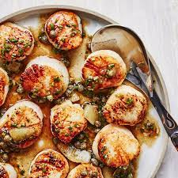

Odin Recipes!
This is a website dedicated to sharing delicious recipes.
Recipe Title
Lasagna Recipes

Lasagna Recipe
Description
This lasagna recipe is a classic french dish that combines layers of pasta,
meat sauce, and creamy cheese.
It is a hearty and flavorful dish
that is perfect for family gatherings or special occasions.
The lasagna is baked to perfection,
resulting in deliciously melted cheese and a golden crust.
Give this recipe a try and enjoy a comforting and satisfying meal!
Lasagna Recipe
Ingredients
- Lasagna noodles
- Ground beef
- Tomato sauce
- Ricotta cheese
- Mozzarella cheese
- Parmesan cheese
- Onion
- Garlic
- Italian seasoning
- Salt and pepper
Steps
- Preheat the oven to 375°F (190°C).
- Cook the lasagna noodles according to the package instructions, then drain and set aside.
- In a skillet, brown the ground beef with diced onions and minced garlic. Drain any excess grease.
- Add tomato sauce and Italian seasoning to the skillet. Simmer for 10 minutes.
- In a separate bowl, mix ricotta cheese, salt, and pepper.
- Layer the lasagna noodles, meat sauce, ricotta mixture, mozzarella cheese, and Parmesan cheese in a baking dish. Repeat the layers as desired.
- Bake in the preheated oven for 30-35 minutes, or until the cheese is melted and bubbly.
- Allow the lasagna to cool for a few minutes before serving. Enjoy!